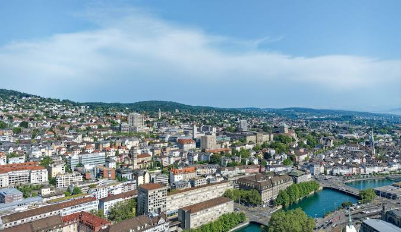

إذا لم تزر بحيرة زيورخ، فكأنك لم تزر سويسرا، تلك البحيرة الساحرة تعتبر واحدة من أهم المعالم السياحية في سويسرا، و التي يجب ألا تفوتك زيارتها خلال رحلتك في مدينة زيورخ، و استمتع بمشاهدة مناظرها الخلابة و جوها المشمس و مياهها الصافية و التي تعتبر الأنظف عالميا. و يحيط البحيرة مجموعة من هضاب الألب و زيميربيرغ جنوبًا، و هضاب بفانينسفيل شمالًا، و العديد من الأماكن المميزة مثل الشاطىء الذهبي الواقع في الجهة الشمالية منها، و في الجهة الشرقية تقع مدينة الزهور و التي تضم مجموعة من المتنزهات و الحدائق و الألعاب، و جسر المشاه الخشبي، و الكنيسة الباروكية. و يمكنك الاستمتاع بالسباحة أيضًا، حيث يتواجد بها حوالي 40 موقع مخصص للسباحة، بعضهم في الأماكن المفتوحة الواقعة على الشواطىء و النهر القريب منها. و تنتشر على ضفافها مجموعة من الفنادق و المقاهي و المطاعم، حيث يمكنك إتمام نزهتك فيها. و ننصحك بالإنضمام لإحدى جولات القوارب التي تجول في البحيرة، و تختلف الجولات حسب مقدمها و قد تضم بعضها وجبات عشاء.
يبلغ ارتفاع قمة يوتلبيرغ 871 متراً و تقع في الجنوب الغربي من زيورخ، بفضل موقعها و ارتفاعها تعطي القمة زائريها إطلالة مذهلة على مدينة زيورخ و بحيرتها، يمكن الصعود إلى القمة من خلال قطار الجبل المسمى يوتلبيرغبان، و يعمل القطار طوال العام و هذا ما يجعل القمة مكاناً سياحياً مناسباً لجميع الرحلات، و تنطلق الرحلة من محطة زيورخ الرئيسية إلى أعلى القمة في رحلة تتطلب حوالي 30 دقيقة و تكلفة 10 فرنكات للذهاب و الإياب. بعد النزول في محطة الجبل تحتاج للمشي ما يقارب 20 دقيقة لتصل إلى قمة الجبل و برج مراقبته و سيقودك الطريق أيضاً إلى مطعم الجبل و تستطيع فيه تناول وجبتك قبل أن تنهي رحلتك عائداً إلى زيورخ، و إذا كانت رحلتك ليلاً سترى الجبل يضيء بالأنوار معطية إياه رونقاً جميلاً.
هي واحدة من أشهر الحدائق الترفيهية في زيورخ، و تضم مجموعة متنوعة من الألعاب، و تشتهر بألعابها الحلزونية، و الزحاليق المائية التي يصل طولها لمسافة 1500 متر، و حمام الأمواج، و حمام الفقاقيع الحراري. كما تضم مسبح في الهواء الطلق، و ساونا و حمام بخار و مراكز للياقة البدنية، و عدد من المحلات و المقاهي و المطاعم. تبعد الحديقة حوالي 40 دقيقة عن وسط المدينة، ويمكنك الوصول إليها عن طريق استقلال القطار من محطة القطار المركزية في زيورخ.
تعتبر واحدة من أكبر حدائق سويسرا، حيث تبلغ مساحتها 11000 متر مربع، و ستشاهد الكثير و الكثير من الحيوانات حيث تضم العديد من أنواع الحيوانات المختلفة و النادرة، مثل الدببة و الزواحف و البطاريق و الثعلب البرتقالي و الخنزير البري، ويمكن التفاعل مع الحيوانات كإطعام الفيلة و مداعبتهم. و تضم الحديقة مجموعة من ألعاب المغامرة، إلى جانب المساحات الخضراء الواسعة، كما تضم مجموعة من المقاهي و المطاعم و محلات الهدايا التذكارية.
من أهم الأماكن السياحية في زيورخ، و تعتبر واحدة من أشهر دور الأوبرا في أوروبا، تم بناءها عام 1891، و هي أول دار أوبرا يتم انارتها بالإضاءة الكهربائية في أوروبا. تصميمها مميز سيجذبك منذ أول وهلة، حيث بُنيت على طراز النيو باروك، مقابل المساحات الخضراء على شاطىء بحيرة زيورخ، ما يمنحها إطلالة ساحرة على البحيرة، و المبنى من الداخل مزخرف بالنقوش و الزخارف الرائعة. يقام فيها أكثر من 250 عرضًا سنويًا، بمشاركة فنانين عالميين، و قد حصدت جائزة أفضل دار أوبرا في العالم عام 2014.
مكان إضافي لمحبي المتاحف و الآثار، يحتوي هذا المتحف على العديد من القطع الأثرية الفريدة، التي يعود تاريخها لسويسرا القديمة، من أسلحة و عملات معدنية و منسوجات و مشغولات يدوية و رسوم و غيرها، فهو يضم مجموعة من القاعات يعرض فيها كل ما يتعلق بالثقافة و التاريخ السويسري، و قد تم بناءه عام 1898. مبناه مميز، فهو عبارة عن قصر ضخم مبني على الطراز الفرنسي، يضم أبراج و حدائق، و يشمل ثلاثة متاحف هي المتحف الوطني السويسري، و القلعة السويسرية، و منتدى التاريخ السويسري، و بالقرب منه تنتشر العديد من المقاهي و المطاعم و محلات الهدايا التذكارية. و يقع المتحف بالمدينة القديمة و هو قريب من محطة القطار المركزية “هاوبتبانهوف”، و مقابله محطة للقوارب يمكنك من خلالها الإنضمام لإحدى جولات نهر ليمات الممتعة.
موقعه مميز في قلب مدينة زيورخ، حيث يقع فندق بور أو لاك في منتزه فريد خاص به، و توفر غرفه إطلالات رائعة على بحيرة زيورخ و جبال الألب، و يبعد بضع دقائق سيرًا على الأقدام من شارع Bahnhofstrasse للتسوق و المركز المصرفي في ساحة باراد. مصنف 5 نجوم، و يوفر لضيوفه كل وسائل الراحة و الرفاهية، و غرفه واسعة ذات أثاث أنيق فاخر، و يضم مركز للياقة البدنية بالإضافة إلى جلسات المساج الطبية و العلاج الطبيعي، و صالون شعر و تجميل. يضم موقف خاص للسيارات، و يمكنك الوصول إليه عبر استقلال إحدى سيارات الأجرة من المطار في مدة لا تزيد عن 30 دقيقة.
ستجد فيه كل وسائل الراحة و الرفاهية التي تحتاجها في فندق رينيسانس زيورخ تاور، فهو مصنف 5 نجوم، غرفه واسعة مكيفة و تحتوي على كافة المرافق، أثاثها أنيق، و نوافذها ممتدة من الأرض إلى السقف، و توفر إطلالات بانورامية ساحرة على المدينة. موقعه مميز، حيث يقع في برج موبيمو بحي زيورخ ويست العصري، و هو قريب من العديد من الشركات و النوادي الشهيرة، و يبتعد مسافة 500 متر من محطة قطار زيورخ هاردبروك، و مسافة 3 دقائق من مركز باهنهوفستراس للتسوق، و حوالي 11 دقيقة بواسطة قطار إس 16 من مطار زيورخ. يضم جيم و ساونا و حمام بخار و موقف خاص للسيارات.
من أفضل أماكن الإقامة في زيورخ، موقعه مميز في قلب المدينة، حيث يبتعد فندق ماريوت زوريخ خطوات من مناطق الأعمال و التسوق و معالم الجذب في المدينة القديمة، و يبعد مسافة 550 متر من محطة القطار الرئيسية. غرفه واسعة مكيفة، تتوافر بها لوازم استحمام فاخرة، و توفر إطلالات بانورامية رائعة على المدينة و البحيرة. الفندق مصنف 5 نجوم، و يضم جيم و ساونا و مقصورة للتشمس الاصطناعي، و مجموعة مميزة من علاجات المساج، و موقف خاص للسيارات، و يوفر لضيوفه خدمة النقل من و إلى المطار. أعجبنا الفندق لموقعه المميز، و اطلالاته الرائعة، و مرافقه الممتازة، و نظافة غرفه، و موظفيه الودودون.
من فنادق زيورخ المصنفة 4 نجوم، موقعه مميز، حيث يقع فندق سنترال بلازا أمام الساحة المركزية بجوار محطة السكك الحديدية الرئيسية، و على بعد خطوات من شارع Bahnhofstrasse للتسوق، و يعود تاريخه لعام 1883. غرفه عازلة للصوت، يتوافر بها كافة المرافق اللازمة، و يضم مركز للياقة البدنية، و موقف خاص للسيارات. أعجبنا الفندق كثيرًا لقربه من المواصلات، و موقعه المميز، و نظافة غرفه، و موظفيه الرائعين.
موقعه مميز في قلب مدينة زيورخ القديمة، حيث يبتعد مسافة 500 متر من بحيرة زيورخ، و 50 متر من محطة الترام، و 400 متر من شارع Bahnhofstrasse للتسوق، و 9 كم من مطار زيورخ. غرف فندق ماركتجاسي واسعة مكيفة، توفر إطلالات رائعة على المدينة، و بها غرفة لتخزين الأمتعة. يضم مركز للياقة البدنية، و موقف خاص للسيارات، و يوفر لضيوفه خدمة النقل من و إلى المطار عند الطلب و مقابل تكلفة اضافية.